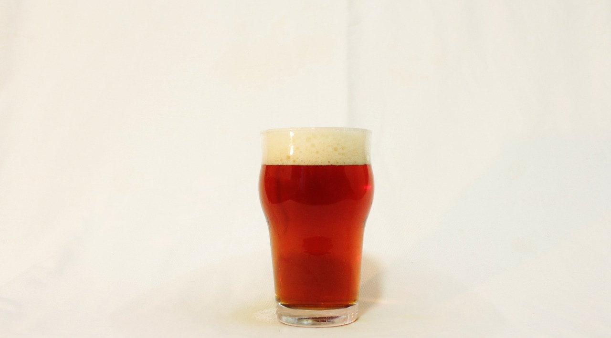

NACIONALIDADE // IRLANDA
CARACTERÍSTICAS // Malte tostado, adocicada e amargor suave.
HARMONIZAÇÃO // Chocolates, sobremesas e doces em geral.
INGREDIENTES // Água, malte, lúpulo, cevada torrada e caramelo.
Descrição
A Irish Red Ale, como o próprio nome do estilo indica, sua aparência tem cor avermelhada, variando do âmbar médio até o acobreado. Deve ser sempre límpida, mas é aceitável que apresente chill haze, ou seja, turbidez a frio. A formação e permanência da espuma costuma ser de baixa a média.
Onde encontrar?
BAR VETERANA
EndereçoAv. Plínio Brasil Milano, 1609 - Bela Vista, Porto Alegre - RS